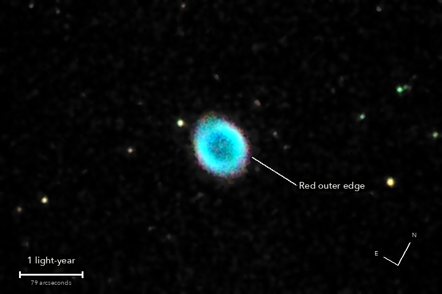

The Ring Nebula
Messier 57, a planetary nebula in Lyra
A dying star has puffed off its outer layers, and the hot core left behind makes them glow: oxygen blue-green, hydrogen and nitrogen red at the edge. It is more barrel than ring, and we look down its length. The Sun will do the same in about 5 billion years.
What you are looking at

Swipe sideways to see the rest. Tap the picture for full size.
- Distance
- About 2,600 light-years
- This picture spans
- 7 light-years
- The light left
- Around 570 BC, about when Pythagoras was born
- The ring is
- About a light-year across: over 60,000 times the distance from the Earth to the Sun
For photographers
4.5 minutes of light on one field; a patch of thin cloud took 15 of the 33 frames.
- Exposures
- 18 x 15 s at ISO 3200: 4.5 minutes
- Frames
- 33 taken, 18 kept. 15 lost to a patch of thin cloud over 8 minutes (stars near the nebula dimmed to 21 to 43 percent). The 18 kept, at 51 to 100 percent, are weighted by transparency squared: worth 9.5 clear frames
- Sampling
- 0.776 arcsec per pixel: one pixel per 2 x 2 colour cell, never enlarged. Stars 5.9 arcsec wide (half-flux): seeing 5.5 to 6.5 this low
- Field
- 9.3 x 6.2 arcmin, cropped round the catalogue position from one sensor frame and turned a quarter turn (no resampling)
- When
- 8 October 2026, late evening, over 19 minutes. 35 to 39 degrees up, no Moon
- Field rotation
- 1.2 degrees over the run, and 74 arcsec of drift; corrected in registration (second-order fit on 50 or more stars)
- Calibration
- No darks and no flat frames were taken: hot pixels found from the run itself (31,000 to 36,000 per colour plane) and repaired; vignetting and dust not corrected
- Stacking
- RAW colour planes (no demosaic), hot pixels by 3 x 3 median, registered on stars with rotation, sigma-clipped weighted mean, one sky constant per colour per frame. Noise 2.9 times lower than one frame (3.1 expected from the weights)
- Sky
- In the picture only: one plane per colour fitted to the sky more than 2.6 arcmin from the nebula, taking off a light-pollution ramp of 13 to 16 DN across the picture. The stack keeps only the constants
- Colour
- The camera's own daylight white balance and colour matrix. Red and blue moved 0.3 and 0.45 px onto green inside the one resampling (the air is a prism this low)
- Finish
- Arcsinh stretch on brightness, colour from a 3.5 px blur. Black at the 60th percentile, S-curve 0.15, no saturation boost. Dark sky neutral and smoothed (median 5 px, bilateral 4 px)
- Not shown
- The faint outer halo (to 1.9 arcmin) and the galaxy IC 1296, 4 arcmin away: both detected in the stack, both under the quiet sky. A Wiener-restored version was made and kept apart (stars 30 percent smaller, sky 40 percent noisier)
- Telescope
- Celestron 8SE Schmidt-Cassegrain: 203 mm aperture, 2,081.7 mm focal length by plate solve of this stack, f/10.3
- Camera
- Sony a6000, stock, at prime focus: APS-C 23.5 x 15.6 mm, 6000 x 4000, 3.9 micron pixels, RAW
- Mount
- Sky-Watcher EQ6-R, unguided. Set down without leveling, 13.4 degrees off the pole; aligned from four plate-solved photos, both axes driven from that model
© 2026 Brad Gessler · Celestron 8SE (8 inch, 2,082 mm) and Sony a6000 on an EQ6-R · San Francisco Bay Area · night of 8 October 2026
Capture and mount: Observatory (Elixir on a Raspberry Pi 3). Stacking: numpy, SciPy, OpenCV, rawpy. Plate solving: astrometry.net. Stacked from the camera's RAW frames. Nothing generated.
© 2026 Brad Gessler. The pictures and the words are his own; all rights reserved.